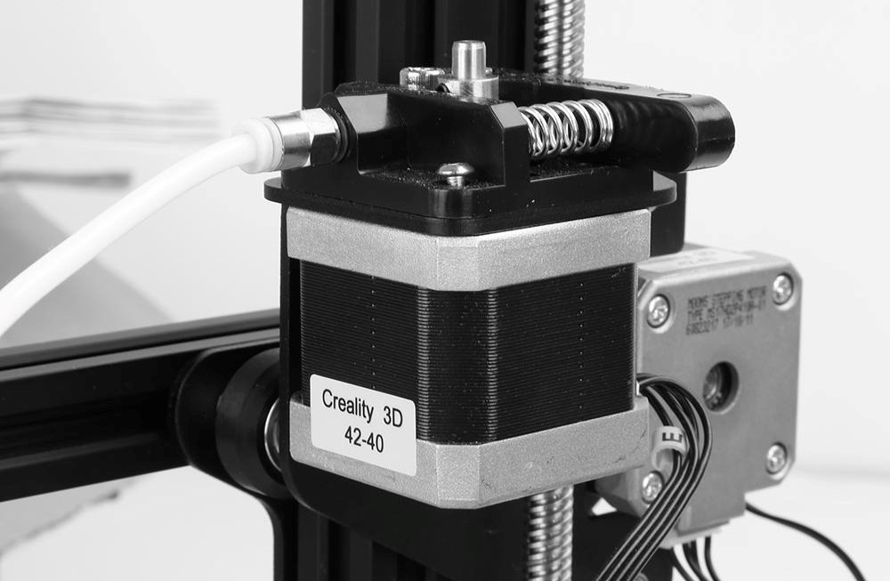

/embedded_programming
(22_march_2022)
We advanced in the topic of electronics in this week of FabAcademy, where we started talking about
output devices. Step by step, we are learning all the things related to electronics, acknowledging
more concepts and resources for us to use in our projects.
The session started with a brief introduction to the main microcontrollers people use and the
concepts one needs to take into account in order to choose the proper microcontroller for the
task that has to be done. Some of the aspects to consider are power needed, pins, ports,
connections, etc.

During the second part of the session, we talked about the basics of electronics such as amperage,
voltage and current, also about electromagnetism and then we started seeing some output components
that are normally used in circuits.
FabLab team started introducing the different kinds of motors we can find (DC, steppers and MOSFETs,
servomotors...), then LEDs, piezo and some others. They finished explaining the difference between
digital and analog read from output devices and showed some examples of stuff that can be done with
them.
.designing_&_producing_a_PCB
This week's task will be combined with WEEK 13's task and consists of designing from scratch a PCB for inputs or outputs. The development of it will be shown on the page of week 13 and will be related to my master's project.